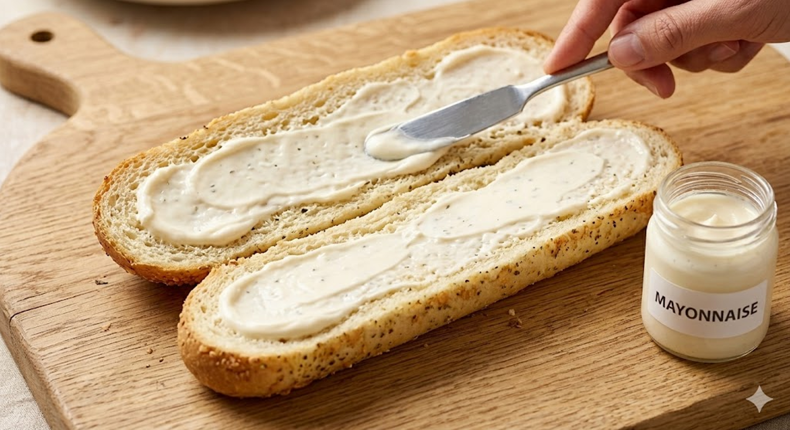
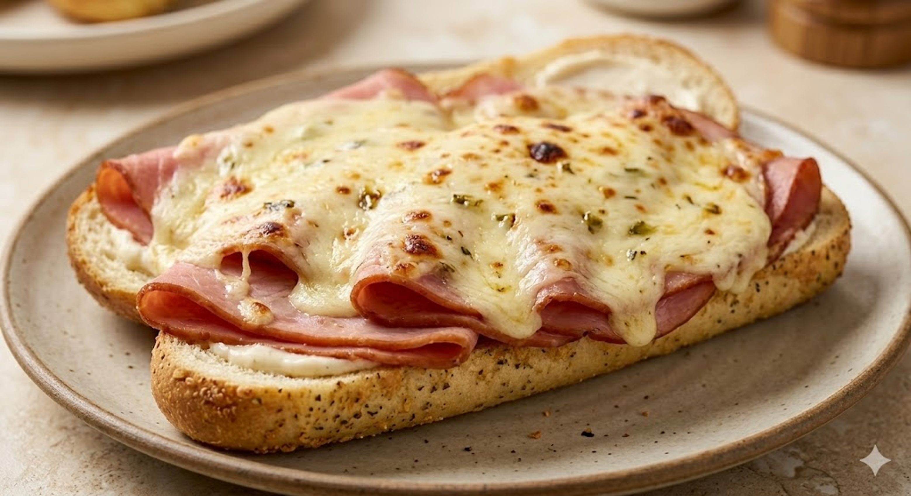
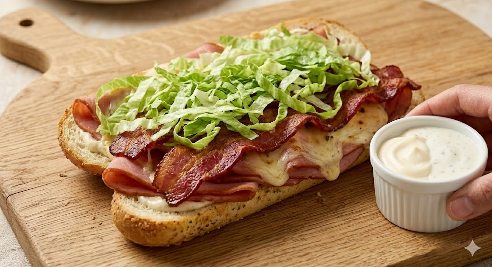
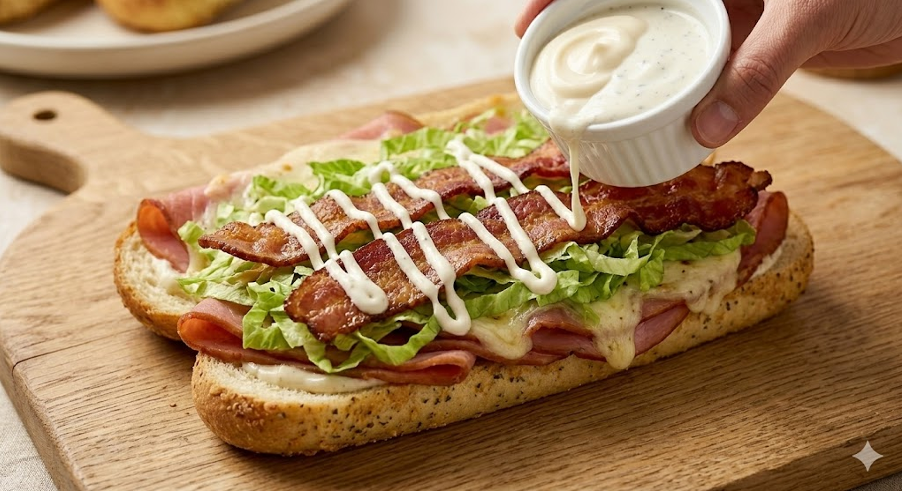

The Master Build
Follow the blueprint. Create the legend.
Step 1: The Prime
Action: Slice your Italian Herb & Cheese loaf lengthwise. Apply a thin, even layer of mayonnaise to both interior sides.
The "Why": The mayo acts as a thermal barrier, ensuring the bread stays soft on the inside while the outside toasted crust gets that signature crunch.

Step 2:The Fusion (Toasting)
Action: Fold your honey ham onto the bottom half of the bread and cover it completely with the pepper-jack cheese slices. Place it under a broiler or in a toaster oven.
The "Why":You want the cheese to bubble and the jalapeño oils to release into the ham. Stop when the edges of the bread are a deep golden brown.

Step 3:The Texture Layer
Action:Remove from heat. Layer your crispy maple wood smoked bacon over the melted cheese, then pile on a generous amount of shredded lettuce.
The "Why":Placing the bacon on the cheese "anchors" it, while the lettuce provides the essential cold-versus-warm contrast that makes this sandwich superior.

Step 4:The Double-Drizzle
Action:Finish with a zesty ranch drizzle in a zigzag pattern over the lettuce. Close the sandwich and slice it at a 45-degree angle.
The "Why":The ranch adds the final hit of acidity and herbs, perfectly balancing the smoky sweetness of the maple bacon.
